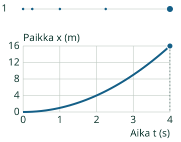
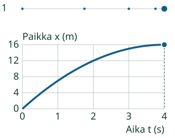
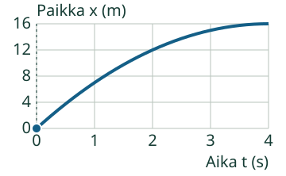
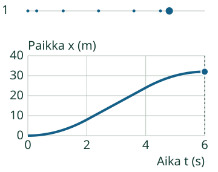

Aava: Katsotaan Loikan liikettä.
Huomaan nopeuden muutoksen.
Sama aika, eri matka: nopeus muuttuu.
Pohdi ensin: Mitä merkkien väleille tapahtuu, kun nopeus kasvaa?
Mistä tämän huomaa?
Sama sekunti, pidempi matka
Ensimmäisessä mallissa Loikka etenee peräkkäisinä sekunteina 1, 3, 5 ja 7 metriä. Ajanvälit ovat yhtä pitkiä, mutta niiden matkat kasvavat. Nopeus kasvaa, ja paikka–aika-kuvaaja jyrkkenee.

Loiveneva viiva ei ole paluu
Toisessa mallissa sekuntimatkat ovat 7, 5, 3 ja 1 m. Loikka kulkee yhä oikealle mutta hidastuu. Paikka kasvaa, joten viiva nousee. Sen jyrkkyys pienenee.

Suora ja vaakasuora ovat eri asioita
Kun joka sekunti kuljetaan 4 m, nopeus pysyy 4 m/s:ssa ja paikka–aika-viiva on suora nouseva. Paikallaan ollessa paikka ei muutu: viiva on vaakasuora. Kuvaaja ei ole maaston kuva.
Kokeile itse
Mitä loiveneva paikka–aika-kuvaaja kertoo Loikan nopeudesta?
Loikka

Ajattelun tueksi
Viiva nousee vielä. Vertaile sen jyrkkyyttä alussa ja lopussa; tämä ei ole mäen kuva.
Kuvaajan tiedot taulukkona
| t (s) | Loikka x (m) | Loikka v (m/s) |
|---|---|---|
| 0 | 0 | 8 |
| 1 | 7 | 6 |
| 2 | 12 | 4 |
| 3 | 15 | 2 |
| 4 | 16 | 0 |
Tehtävällä on oma kuvaajansa. Voit vastata suoraan tai palata esimerkkiin ja käyttää apua. Ylemmän mallin katsominen ei ole pakollista.
Vertaa uuteen tilanteeseen
Tutki myös välin sisälle
Uudessa mallissa Loikka lähtee levosta, liikkuu hetken tasaisesti ja jarruttaa takaisin lepoon. Paikka–aika-kuvaajassa on jyrkkenevä kaari, suora osa ja loiveneva kaari.

Opettajalle ja ilman ruutua
Luokat 7–9. Kanoninen rooli process säilyy; pakollinen esitieto on PHY79-ACCEL-CONCEPT. Harjoitellaan paikan ja kuluneen ajan sekä yhtä pitkien aikavälien matkojen tulkintaa. Kaavan tai derivaatan osaamista ei aseteta uudeksi esitietoportiksi.
Piirtäkää samaa suoraviivaista kävelyä kuvaava paikka–aika- ja nopeus–aika-kuva. Kirjatkaa paikka yhtä pitkien aikavälien päätteissä. Verratkaa merkkivälejä ja selittäkää, miksi kaareva kuvaaja ei tarkoita kaarevaa kulkureittiä. Ruutumalli ei todista oikean fyysisen mittauksen osaamista.
Malli kulkee suoralla oikealle, lähtöpaikka on 0 m ja suunnattu nopeus on vähintään0. Tässä rajauksessa paikka ja kuljettu matka ovat samat; yleisesti ne ovat eri suureita. Nopeus on paloittain lineaarinen ajan funktio. Paikka saadaan sen täsmällisestä integraalista, ja kuvaajan toisen asteen osat piirretään täsmällisinä Bézier-kaaren osina. Vaiheen vaihtumiskohdassa erisuuntaisten kiihtyvyyksien yhteistä hetkellistä derivaattaa ei väitetä tunnetuksi. Näissä tehtävissä käytetään ilmoitetun välin muutosta.
Vain nimetyt äärelliset mallit, metrit ja sekunnit, ilmoitetut alueet, akselit, askel, yhden sekunnin ajanmerkit ja toistonopeus. Tuntematon malli, yksikkö, ohjaus tai arvo ei korvaudu oletuksella. Negatiiviset nopeudet, suunnanvaihdot, voimat ja 2D-radat eivät kuulu tähän toteutukseen. Negatiivinen kiihtyvyys ei yleisesti tarkoita vauhdin pienenemistä muissa suunnissa.
Paikallinen palaute koskee nykyistä matalan kynnyksen harjoitusta. Ei henkilökohtaista historiaa, formaalia itsenäistä/viivästettyä näyttöä tai koko prosessin arviointirubriikkia. Esimerkki, vihje ja taulukko ovat tukea. Ei pakollista puhetta, kuuntelua, nimeämistä, aikarajaa tai tiettyä klikkausreittiä. Oppilasymmärrystä, vaikuttavuutta, täydellistä manuaalista saavutettavuutta ja julkaisuoikeuksia ei ole hyväksytty.
Lopuksi: Miksi sama loppupaikka ja loppuaika eivät kerro, muuttuiko nopeus?